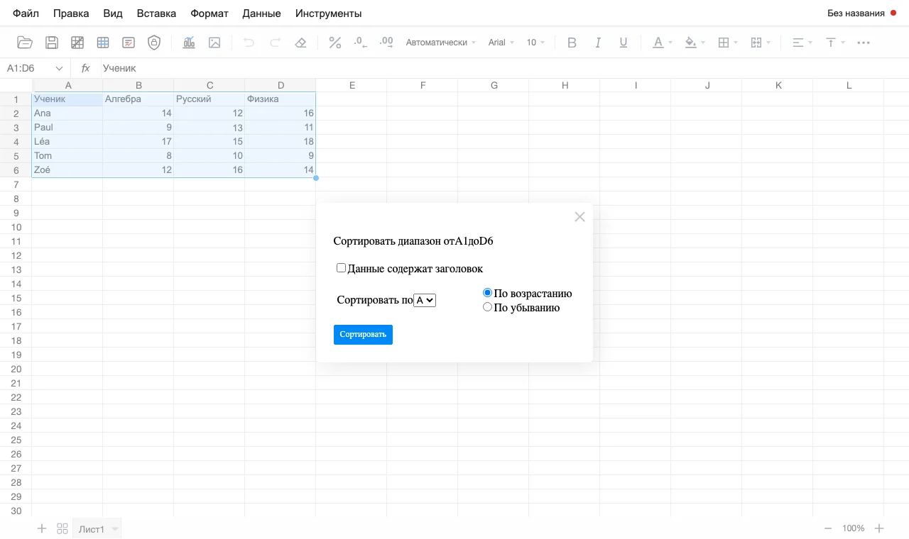
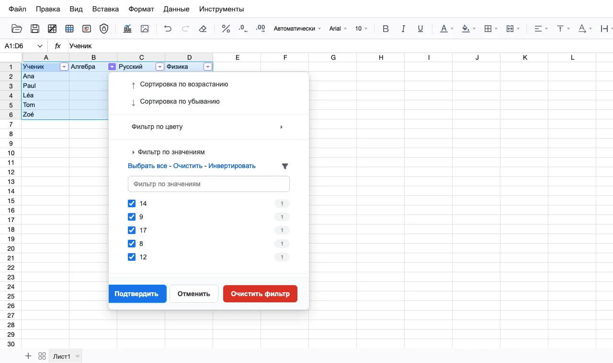
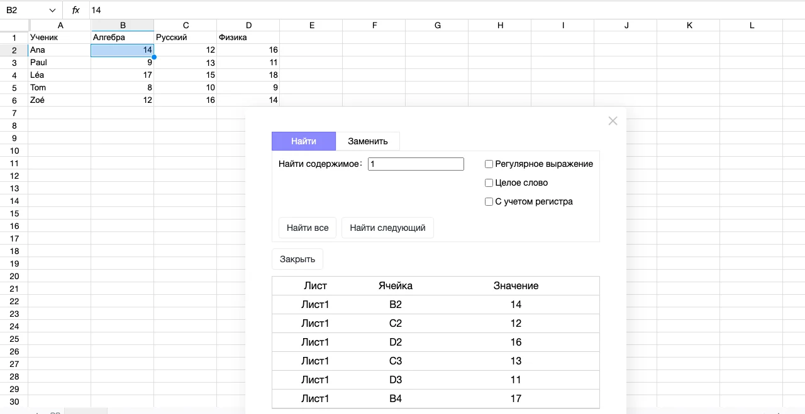

Сортировка, фильтр, поиск
Сортировка
| Команда | Результат |
|---|---|
| Данные › Сортировка и фильтрация › По возрастанию, По убыванию | сортирует выделение по первому столбцу; также и правая кнопка |
| правая кнопка › Сортировать | выбор столбца, порядка и того, является ли первая строка заголовком |

Выделяйте всю таблицу, а не один столбец: строки должны оставаться целыми. Диапазон с объединёнными ячейками не сортируется.
Фильтр
- Выделить таблицу вместе с заголовком.
- Данные › Сортировка и фильтрация › Создать фильтр, или , или правая кнопка › Фильтровать.
- Щёлкнуть стрелку столбца.

| В меню столбца | Результат |
|---|---|
| Сортировка по возрастанию, Сортировка по убыванию | сортирует строки таблицы |
| Фильтр по цвету | по цвету фона или текста |
| Фильтр по значениям | отметить оставляемые значения; Выбрать все, Очистить, Инвертировать; поле ищет значение |
| Подтвердить | применяет |
| Очистить фильтр | убирает фильтр таблицы |
Отброшенные строки скрываются, а не удаляются. Фильтры нескольких столбцов действуют вместе. Данные › Сортировка и фильтрация › Очистить фильтр убирает фильтр.
Поиск, замена
Ctrl F открывает Найти, Ctrl H — Заменить.

| Параметр | Результат |
|---|---|
| Регулярное выражение | искомый текст — регулярное выражение: ^A находит то, что начинается с A |
| Целое слово | вся ячейка равна тексту |
| С учетом регистра | различает прописные и строчные |
| Найти все | перечисляет найденные ячейки; щелчок по строке ведёт к ячейке |
| Найти следующий | переходит к следующей |
| Заменить, Заменить все | одну ячейку, все |
Поиск ведётся на показанном листе.